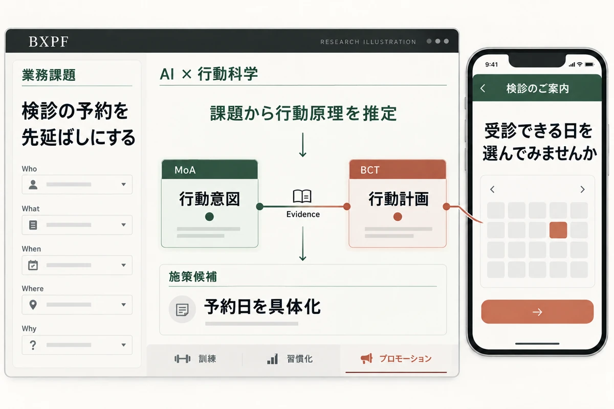

インタラクティブ・プログラミング研究室
01 / HCI
複雑な情報を、
人に届く表現へ。
Ripple Presentationでは、ブログの話題が伝わる過程を時間とリンク構造から可視化。大学院修了後には、個人制作のVisualDataで電機産業35年の変化を伝えました。
VisualDataを体験 ↗WHY MEDICINE
医用画像解析を臨床の現場へ届ける研究から、検診を受ける人の理解と行動を支える研究へ。病変を見つける技術と、その価値が人に届く体験を、両側から考えています。
01 / HCI
Ripple Presentationでは、ブログの話題が伝わる過程を時間とリンク構造から可視化。大学院修了後には、個人制作のVisualDataで電機産業35年の変化を伝えました。
VisualDataを体験 ↗
02 / CV × Digital Health
比較読影を支える画像位置合わせを開発・実用化し、筆頭著者として報告。その後、プレシジョンヘルスの研究をリードし、非造影CTによる膵臓がんの検出支援、造影MRIによる転移性肝腫瘍などの検出支援AIの開発へ広げてきました。
プレシジョンヘルス紹介動画 ↗CTの図は公開研究に基づく説明用再構成（AI生成）です。架空のCT・検出例であり、実際の患者画像や検出結果ではありません。

03 / Digital Health × HCI
行動変容支援プラットフォームBXPFでは、業務課題からAIが行動原理（MoA）を推定し、研究知見に基づく介入技法（BCT）と対応付けます。訓練・習慣化・検診案内など、用途と個人特性に合った働きかけへ展開しています。
BXPFの共著公開記事 ↗CURRENT RESEARCH / 筑波大学 博士研究
「自分の身体」を、手の中に。
医用画像から自分の臓器を模型にし、心拍と同期する振動・音・光を重ねる。画像解析・HCI・行動科学を、自分の身体に触れる体験へつなぐ博士研究です。
その体験が、身体の記憶や健康意識、検診などの行動にどうつながるかを探究しています。
プロトタイプの公開映像 ↗ 書籍『コンバージングテクノロジー』寄稿 ↗

ABOUT
Masaki Ishihara
情報に、手触りを。
技術に命の使命を。
情報可視化、医用画像解析、行動科学×AIに取り組む研究者。筑波大学大学院 博士後期課程に在籍し、個人事業「メディカルツイン」でも研究と実践をつないでいます。
ENGLISH SUMMARY
I am Masaki Ishihara. My research connects medical imaging, human–computer interaction, and behavioral science. My work spans image registration for clinical use, cancer detection support, and evidence-based intervention design. At the University of Tsukuba, I study Haptic Anatomy: personalized organ models with heartbeat-synchronized feedback, exploring their relationship to memory, health awareness, and behavior.